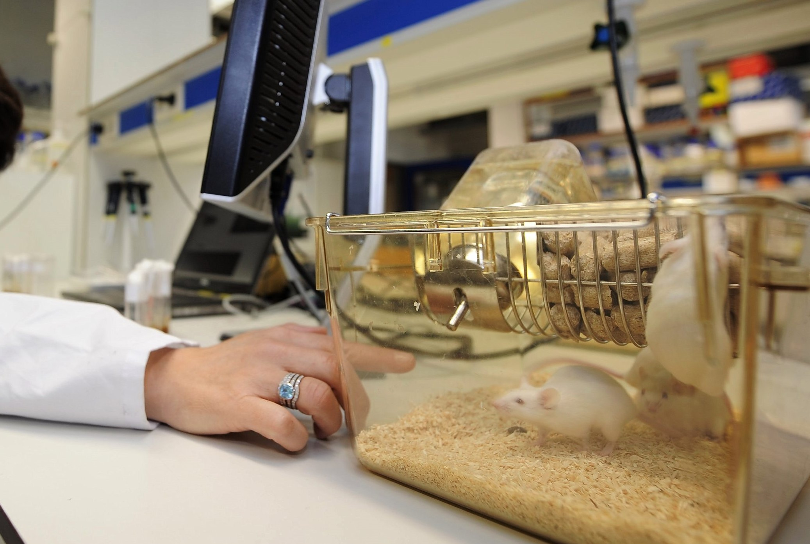

Overview:
Did you realise that many of the items we use on a daily basis legally be tested on animals?
Every new chemical,
from perfumes to medications to the fabric dyes in our clothes, has at some point been force-fed to animals.
Many businesses are working globally in collaboration with businesses and governmental organisations to replace outdated and harsh animal poisoning tests
with more protective modern solutions.

What is animal testing?
A scientific experiment or test that forces a live animal to endure something that is likely to cause them pain, suffering, discomfort,
or long-term harm is considered an animal test.Visiting the veterinarian with your pet is not the same as using animals in experiments.
The majority of lab animals are killed at the conclusion of the experiment after being purposefully hurt, not for their own good.
Animal experiments include:
- The forced ingestion of toxic gases,
- The surgical removal of an animal's organs or tissues to intentionally cause damage,
- The injection or force feeding of potentially harmful substances to animals, and
- The exposure of those creatures to stressful situations that make them feel depressed and anxious.
In some tests, the animal must pass away in order to do the test. In the harsh Lethal Dose 50 test, 50% of the animals die or are murdered shortly
before the point of death, for instance, regulatory tests for botox, vaccinations, and various tests for chemical safety are essentially versions of this procedure.